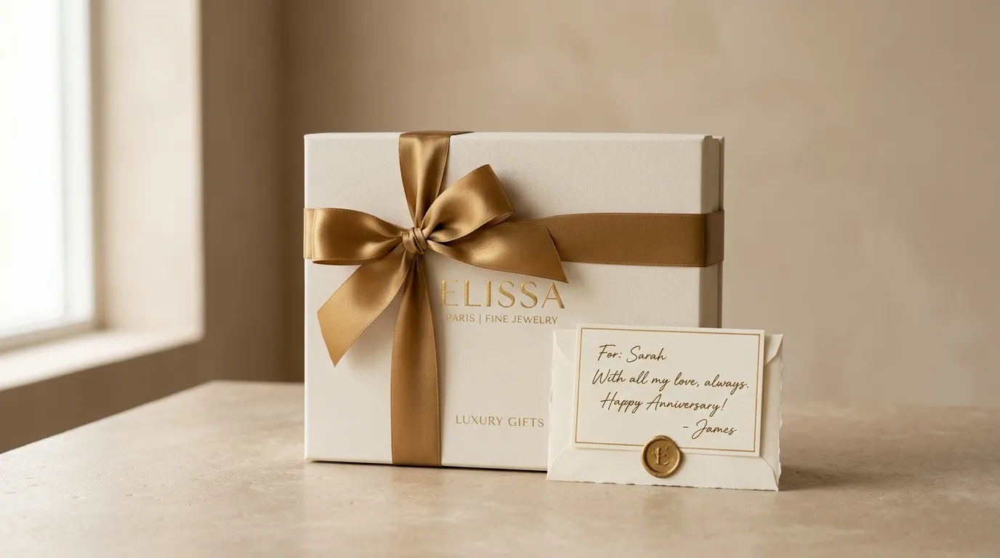

Apa Itu Merchandise Kantor Eksklusif?
Merchandise kantor eksklusif merujuk pada produk corporate gift yang dirancang dengan standar kualitas lebih tinggi dibandingkan souvenir kantor pada umumnya, baik dari sisi material, proses produksi, maupun kemasan akhir yang ditampilkan kepada penerima.
Perbedaan utama merchandise eksklusif terletak pada tingkat kurasi setiap detailnya. Material yang dipilih biasanya lebih premium, seperti kulit asli atau sintetis berkualitas tinggi, logam presisi, atau kayu solid, dibandingkan bahan standar yang umum digunakan pada souvenir massal.
Proses finishing juga lebih diperhatikan, termasuk detail jahitan, ukiran logo, atau pelapisan warna yang lebih tahan lama.
Selain aspek fisik produk, kemasan menjadi elemen penting yang membedakan merchandise eksklusif dari souvenir biasa.
Kemasan berupa gift box dengan desain khusus, dilengkapi kartu ucapan atau elemen personalisasi, memberikan kesan bahwa barang tersebut memang dipersiapkan secara khusus, bukan sekadar barang cetak massal yang dibagikan tanpa perhatian detail.
Mengapa Merchandise Kantor Eksklusif Penting untuk Citra Profesional?
Merchandise kantor eksklusif penting karena menjadi representasi fisik dari standar kualitas dan perhatian detail yang dimiliki perusahaan, sehingga turut membentuk persepsi profesionalitas di mata penerima.
Ketika sebuah perusahaan memberikan merchandise dengan kualitas tinggi, penerima cenderung mengasosiasikan hal tersebut dengan tingkat keseriusan dan kredibilitas bisnis secara keseluruhan.
Kesan ini sangat relevan terutama dalam konteks hubungan bisnis dengan klien besar atau mitra strategis, di mana detail kecil sering kali menjadi pertimbangan dalam membangun kepercayaan jangka panjang.

"Investasi pada merchandise premium umumnya sebanding dengan citra jangka panjang yang ingin dibangun perusahaan."
— Nazhima Nadine, Penulis Merchandise Kantor
Merchandise eksklusif juga berperan dalam membedakan perusahaan dari kompetitor. Di tengah banyaknya perusahaan yang memberikan souvenir standar, kehadiran merchandise dengan kualitas dan presentasi yang lebih matang dapat meninggalkan kesan yang lebih kuat dan mudah diingat oleh penerima, sehingga memperkuat posisi brand di benak mereka.
Selain manfaat eksternal, pemberian merchandise eksklusif kepada karyawan level tertentu juga dapat memperkuat rasa dihargai dan loyalitas terhadap perusahaan, karena barang yang diberikan mencerminkan apresiasi yang lebih personal dibandingkan souvenir umum yang dibagikan secara massal.
Bagaimana Cara Memilih Merchandise Kantor Eksklusif yang Tepat?
Cara memilih merchandise kantor eksklusif yang tepat dimulai dari memahami profil penerima, menentukan konteks pemberian, memilih material dan desain yang mencerminkan standar brand, serta memastikan proses personalisasi dilakukan secara matang.
Siapa Target Penerima Merchandise Eksklusif?
Menentukan target penerima menjadi langkah penting karena memengaruhi tingkat kemewahan dan jenis produk yang dipilih.
Merchandise eksklusif umumnya ditujukan untuk penerima pada level strategis, seperti klien besar, mitra bisnis jangka panjang, atau eksekutif internal perusahaan.
Profil penerima ini biasanya lebih memperhatikan detail kualitas dibandingkan penerima pada level umum, sehingga pemilihan produk perlu disesuaikan dengan ekspektasi tersebut agar kesan yang ditampilkan benar-benar sesuai tujuan.
Konteks Apa yang Cocok untuk Pemberian Merchandise Eksklusif?
Konteks pemberian yang cocok untuk merchandise eksklusif meliputi momen penting seperti penandatanganan kerja sama, perayaan ulang tahun perusahaan, penghargaan pencapaian tertentu, atau kunjungan resmi dari mitra bisnis strategis.
Momen-momen tersebut memiliki nilai simbolis yang tinggi, sehingga pemberian merchandise dengan kualitas premium menjadi lebih relevan dibandingkan pada acara rutin sehari-hari. Kesesuaian konteks ini juga membantu memastikan anggaran yang dikeluarkan sebanding dengan nilai strategis dari momen tersebut.
Bagaimana Memastikan Desain Mencerminkan Standar Brand?
Memastikan desain mencerminkan standar brand dilakukan dengan menyelaraskan warna, logo, dan gaya visual merchandise terhadap panduan identitas perusahaan yang sudah ada, tanpa mengorbankan kesan elegan pada produk akhir.
Detail seperti ukuran logo, posisi cetakan, dan kombinasi warna perlu diperhatikan secara cermat agar tidak terkesan berlebihan pada produk premium.
Pendekatan desain yang lebih halus, seperti ukiran timbul atau cetakan logo berukuran kecil namun presisi, sering kali lebih sesuai untuk merchandise eksklusif dibandingkan cetakan logo besar yang umum digunakan pada souvenir massal.
Apa Saja Faktor yang Menentukan Kesan Eksklusif pada Merchandise?
Faktor yang menentukan kesan eksklusif pada merchandise meliputi kualitas material, detail finishing produk, jenis kemasan, tingkat personalisasi, serta kesesuaian desain dengan identitas brand perusahaan.
Kualitas material menjadi faktor paling mendasar, karena bahan yang digunakan langsung memengaruhi tampilan dan daya tahan produk. Material seperti kulit asli, logam presisi, atau kayu solid umumnya memberikan kesan lebih premium dibandingkan bahan plastik atau kain standar yang sering digunakan pada souvenir massal.
Detail finishing turut berperan besar dalam membentuk kesan eksklusif. Proses seperti ukiran timbul, pelapisan warna berkualitas tinggi, atau jahitan rapi pada produk berbahan kain maupun kulit menunjukkan tingkat perhatian yang lebih tinggi dibandingkan produk dengan proses produksi massal yang minim detail.
Jenis kemasan juga menjadi penentu penting. Gift box dengan desain khusus, dilengkapi elemen seperti pita, kartu ucapan, atau insert khusus untuk menata produk di dalamnya, memberikan pengalaman unboxing yang lebih berkesan dibandingkan kemasan plastik sederhana.
Apa Saja Kesalahan Umum dalam Memilih Merchandise Eksklusif?
Kesalahan umum dalam memilih merchandise eksklusif meliputi terlalu fokus pada harga tinggi tanpa memperhatikan relevansi produk, mengabaikan konsistensi desain dengan identitas brand, serta kurang memperhatikan detail kemasan sebagai bagian dari pengalaman penerima.
Sebagian perusahaan beranggapan bahwa harga tinggi otomatis menghasilkan kesan eksklusif, padahal relevansi produk dengan kebutuhan atau gaya hidup penerima tetap menjadi faktor penting. Produk mahal namun kurang fungsional justru berisiko kurang dihargai dibandingkan produk dengan harga menengah namun tepat sasaran.
Kesalahan lain yang sering terjadi adalah mengabaikan konsistensi desain dengan identitas visual perusahaan, sehingga merchandise terkesan terpisah dari citra brand secara keseluruhan.
Selain itu, banyak perusahaan yang kurang memperhatikan detail kemasan, padahal pengalaman membuka kemasan turut membentuk kesan pertama penerima terhadap kualitas merchandise yang diberikan.
Tips Praktis Mempersiapkan Merchandise Kantor Eksklusif
Beberapa tips praktis yang dapat membantu proses persiapan merchandise eksklusif meliputi perencanaan anggaran sejak awal, pemilihan vendor dengan portofolio produk premium, serta pengecekan sampel sebelum produksi dalam jumlah besar dilakukan.
Perencanaan anggaran sejak awal membantu perusahaan menentukan batas kualitas material dan jenis kemasan yang realistis, sehingga proses pemilihan produk dapat berjalan lebih terarah tanpa perubahan besar di tengah proses.
Selain itu, memilih vendor dengan portofolio produk premium yang jelas dapat membantu memastikan standar kualitas yang diharapkan benar-benar tercapai.
Pengecekan sampel sebelum produksi massal juga menjadi langkah penting, terutama untuk merchandise eksklusif yang melibatkan detail finishing lebih kompleks. Langkah ini membantu memastikan hasil akhir sesuai ekspektasi sebelum diproduksi dalam jumlah besar untuk didistribusikan kepada penerima.

Kesimpulan
Merchandise kantor eksklusif merupakan investasi strategis yang berperan penting dalam membangun citra profesional perusahaan, terutama dalam konteks hubungan bisnis dengan klien besar dan mitra strategis.
Keberhasilan merchandise eksklusif ditentukan oleh kombinasi material berkualitas, detail finishing yang matang, kemasan yang berkesan, serta konsistensi dengan identitas brand perusahaan.
Perencanaan yang cermat sejak tahap konsep hingga produksi menjadi kunci utama agar merchandise benar-benar mencerminkan standar profesionalitas yang ingin ditampilkan perusahaan.